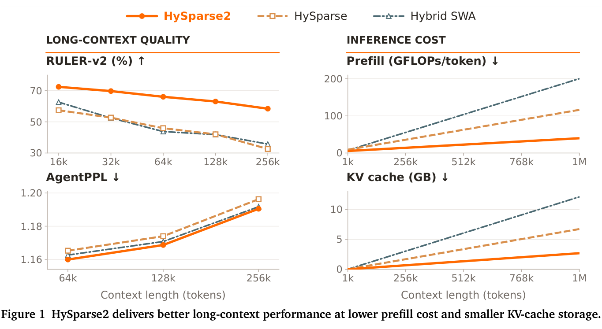
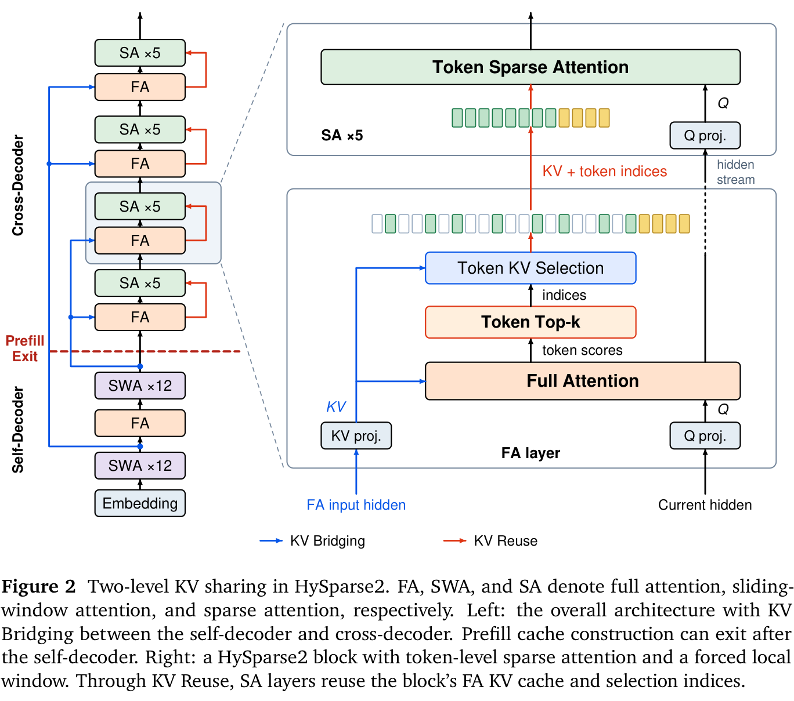
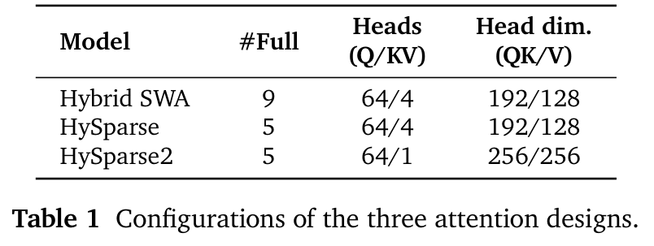
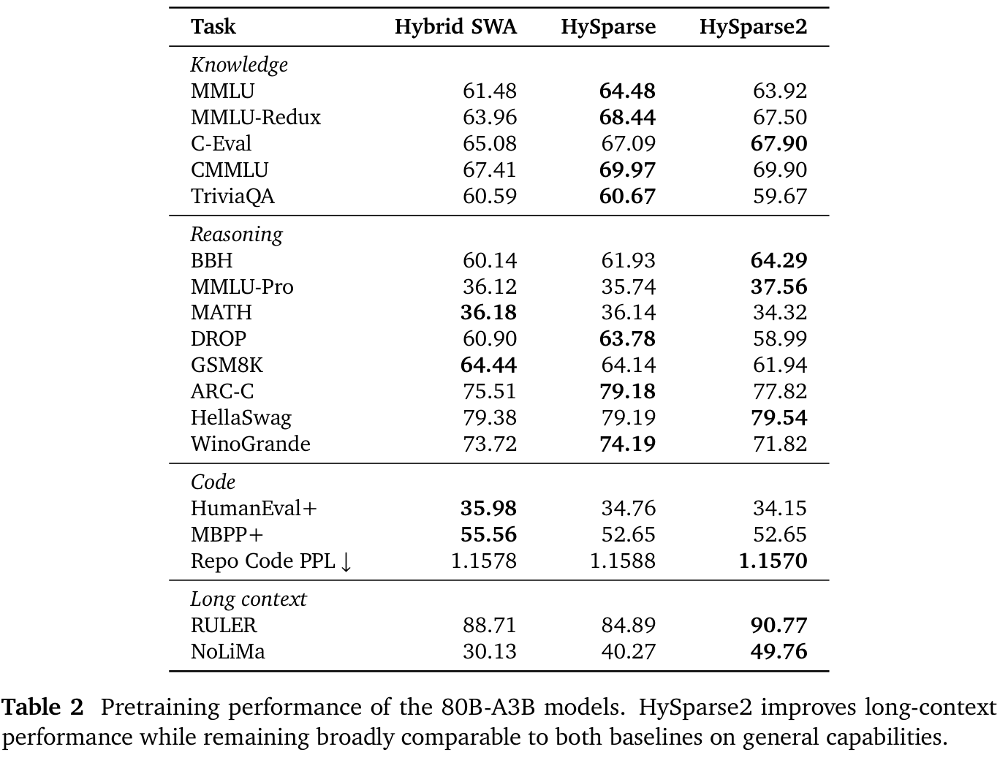
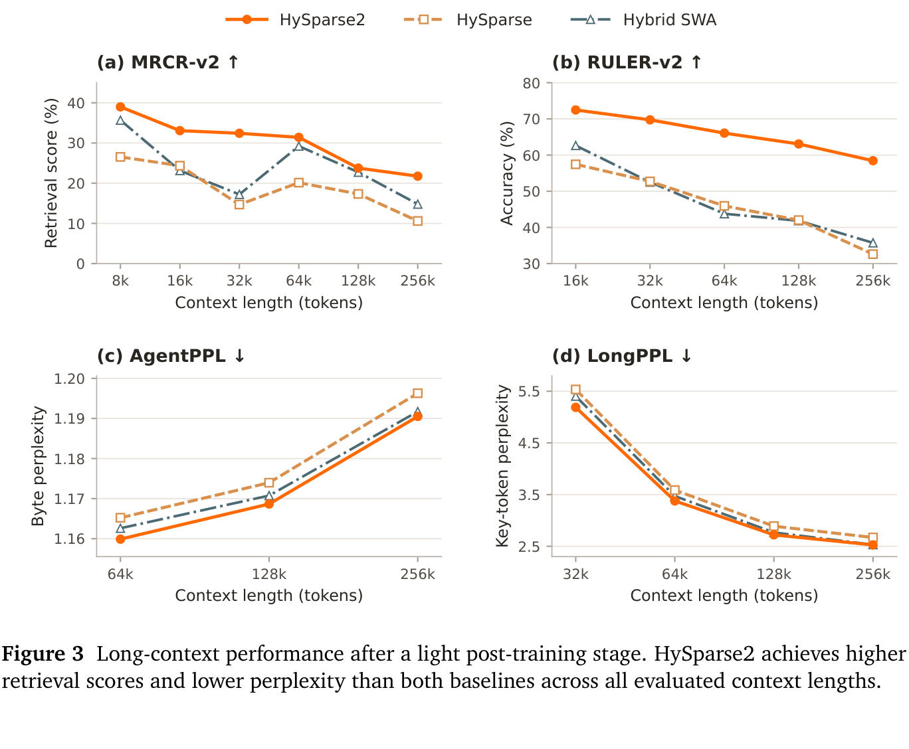
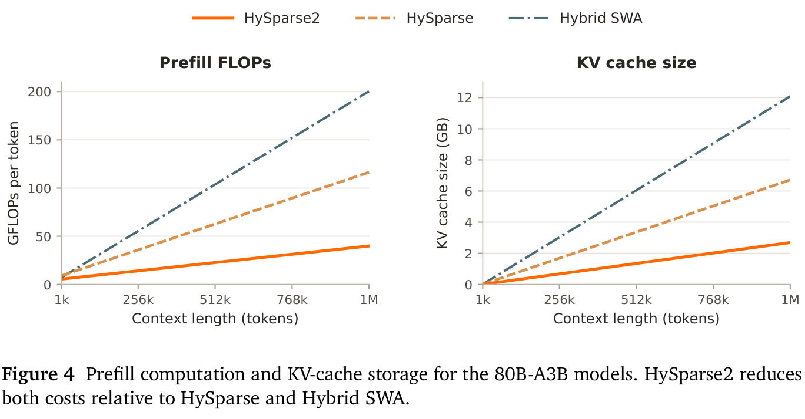
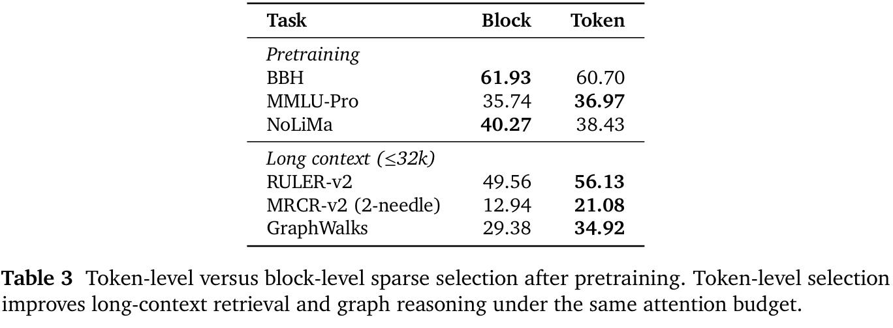
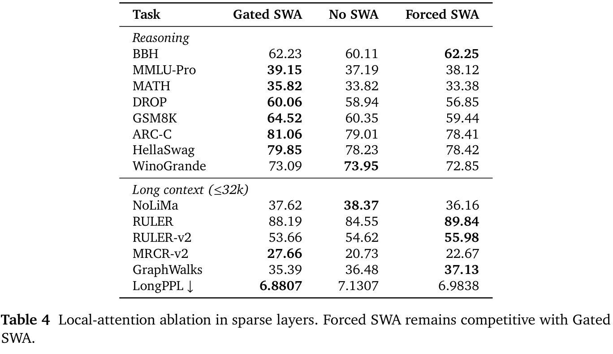
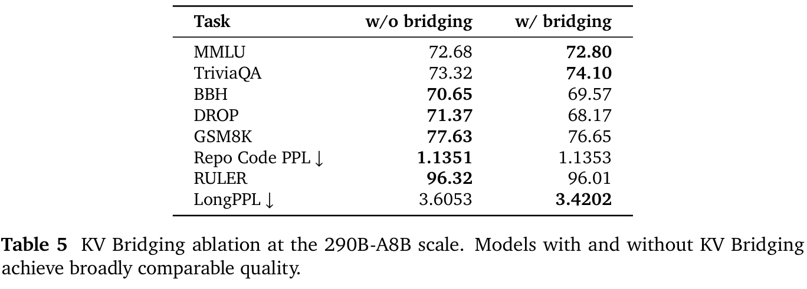
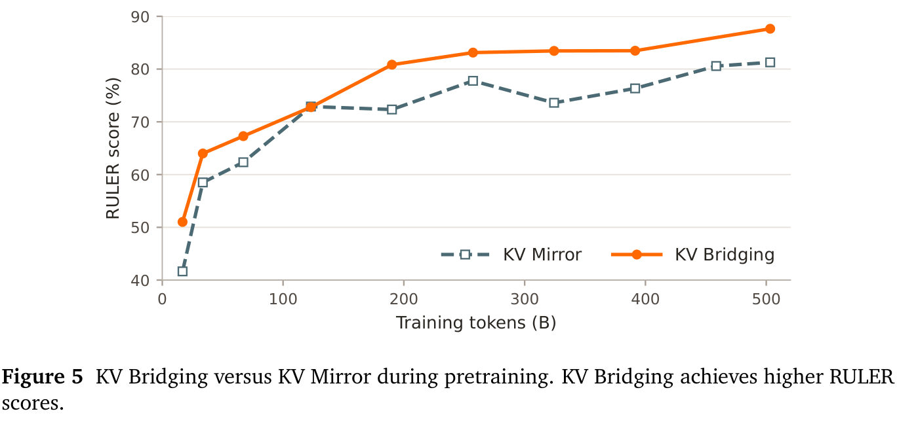

Jianyu Wei*、Yizhao Gao*、Qihao Zhang、Shimao Chen、Zhengju Tang、Yu Cheng、Shengjie Zhou、Zihan Jiang、Yifan Song、Hailin Zhang、Liang Zhao、Bo Yang、Gang Wang、Shijie Cao⋄、Fuli Luo⋄,†
LLM-Core Xiaomi
长时程、多轮 agent 通常生成简短的动作，并处理来自工具与环境的长篇观测内容。不断增长的上下文要求高效的 prefill、紧凑的 KV cache 存储以及准确的长上下文检索。为满足这些需求，我们提出 HySparse2：一种采用两级 KV 共享的混合稀疏 attention 架构。在外层，KV Bridging 采用 YOCO 风格的 self-decoder 与 cross-decoder 结构，但仅在全 attention 层之间建立桥接。self-decoder 使用混合滑动窗口 attention（SWA），而 cross-decoder 使用混合稀疏 attention。cross-decoder 中全 attention 层的 KV cache，由 self-decoder 中全 attention 层的隐藏状态生成。在内层，HySparse2 保留了 HySparse 的核心 KV Reuse 设计，并作出两项改进。首先，以 token 级稀疏性替代块级稀疏性，实现更精细的长上下文检索。其次，移除稀疏层中独立的 SWA 分支，改为强制将近期 token 的一个滑动窗口纳入稀疏选择。这样的两级 KV 共享，使所有 cross-decoder KV cache 都能够由 self-decoder 的隐藏状态构建。因此，prefill 可以在 self-decoder 之后退出，跳过全部 cross-decoder 层。在一个 80B-A3B MoE 模型上，HySparse2 在长上下文检索和多轮 agent 任务上优于 HySparse 与 Hybrid SWA，同时显著降低 prefill 计算量和 KV cache 存储量。

*同等贡献。⋄通讯作者。†团队负责人。
agent 推理将长上下文与多轮交互结合起来。在各轮交互中，生成的一段简短动作或工具调用，可能返回长得多的搜索结果、执行轨迹或文档；恢复 decoding 之前，需要先对这些内容执行 prefill。随着观测内容累积，agent 必须在不断扩展的历史中检索并整合证据，因而同时增加 attention 计算量与 KV cache 存储量。因此，这些工作负载要求高效的 prefill、紧凑的 KV cache 存储以及准确的长上下文检索。
HySparse（Gao et al., 2026）通过交错排列全 attention 层与稀疏 attention 层来提高长上下文效率。每个全 attention 层向后续稀疏层提供选择索引和 KV cache，在无需蒸馏辅助 indexer 模块的情况下，降低 attention 计算量和 KV cache 存储量（Gao et al., 2024; DeepSeek-AI et al., 2025）。然而，对于 agent 推理，HySparse 在缩短 prefill、进一步减少 KV cache 存储以及提高检索精度方面，仍有相当大的提升空间。
在本工作中，我们提出 HySparse2，以两级 KV 共享扩展 HySparse。遵循 YOCO（Sun et al., 2024），主干被划分为结合全 attention 与滑动窗口 attention（SWA）的 self-decoder，以及结合全 attention 与稀疏 attention 的 cross-decoder。在外层，KV Bridging 连接两个 decoder 中的全 attention 层。每个 cross-decoder 全 attention 层将自己的 K/V 投影应用于对应 self-decoder 全 attention 层的输入隐藏状态。在内层，KV Reuse 保留 HySparse 在每个混合块内共享 KV cache 与选择索引的机制。
HySparse2 还进行了两项能够提高准确性和效率的修改。首先，以 token 级选择替代块级选择，将稀疏 attention 预算更精确地分配给相关 token。其次，以强制纳入近期 token 的窗口替代稀疏层中的独立 SWA 分支，让局部 token 和全局 token 使用同一份共享 KV cache。这样，所有 cross-decoder KV cache 都能够由 self-decoder 的隐藏状态构建。因此，prefill 可以在 self-decoder 之后退出。
我们将 HySparse2 与采用相同数据和训练安排的 80B-A3B MoE 模型 HySparse 和 Hybrid SWA 进行比较。预训练后，HySparse2 保持大体相当的通用能力，并改善长上下文检索。经过轻量后训练，其平均 MRCR-v2 和 RULER-v2 得分相较 HySparse 分别提高 11.30 和 19.81 个百分点，并且在最长达 256k 的全部评估长度上，AgentPPL 和 LongPPL 均低于两个基线。在 1M token 下，我们的分析表明，其 prefill FLOPs 相较 HySparse 和 Hybrid SWA 分别降低 2.92 倍和 5.02 倍，同时 KV cache 更小。消融实验表明，token 级选择在相同 attention 预算下改善检索，而 KV Bridging 保持大体相当的质量。
长时程、多轮 agent 使推理越来越由输入主导。工具响应新增的 token 数，可能远多于产生这些响应的动作所包含的 token 数。仅降低 attention 成本，无法消除将这些 token 传递经过主干所需的计算。
跨层 KV cache 共享能够同时减少 KV 存储量和 prefill 计算量。YOCO 使用 self-decoder 构建由各 cross-decoder 层共享的全局 KV cache，使 prefill 的 cache 构建能够在 self-decoder 之后退出（Sun et al., 2024）。Gemma 3n 采用相关的跨层 KV 共享机制，以提高 prefill 效率（Sanseviero and Ballantyne, 2025）。
（接上页）HySparse 在其混合稀疏 attention 块内部应用跨层共享：每个全 attention 层与后续稀疏 attention 层共享其全局 KV cache 和 top-\(k\) 块索引，但 prefill 仍会执行所有层（Gao et al., 2026）。HySparse2 进一步将 YOCO 风格的结构融入 HySparse，将减少 attention 计算量与 KV 存储量和缩短 prefill 路径结合起来。
agent 工作负载需要更紧凑的 KV cache。KV cache 压缩涵盖四个维度：头、序列、层和精度。头级方法通过 GQA/MQA 共享 KV 头（Ainslie et al., 2023; Shazeer, 2019），或像 MLA 一样，将 KV 表示压缩为潜在状态（Liu et al., 2024a）。序列级方法将多个 token 压缩为更少的 cache 条目（DeepSeek-AI et al., 2026）。层级方法在各层之间共享 KV cache（Brandon et al., 2024; Sun et al., 2024）。精度级方法降低缓存的 key 和 value 的数值精度（Hooper et al., 2024; Liu et al., 2024b）。以往工作侧重于沿头、序列和精度维度进行层内压缩。相比之下，HySparse2 通过 KV Bridging 和 KV Reuse 推进跨层共享。
稀疏 attention 将每个 query 限制为仅访问 KV 条目的一个子集，从而降低长上下文 attention 成本（Child et al., 2019）。其选择粒度带来建模准确性与推理效率之间固有的权衡。HySparse 采用块级稀疏性作为一种实用的折中，因为评估未显示出明显的准确性劣势，而规则的块结构能够支持高效 kernel。然而，现代 agent 工作负载包含长时程的多轮轨迹，需要从长历史上下文中精确检索。在这些模式下，块级选择表现出明显的准确性劣势，而 token 级选择能够更忠实地检索相关证据。稀疏 kernel 的近期进展也使 token 级实现具备实用性（Wang et al., 2025）。因此，HySparse2 采用 token 级稀疏性，实现更精确的上下文选择。
图 2 展示了 HySparse2 架构。遵循 YOCO（Sun et al., 2024），主干分为 self-decoder 和 cross-decoder。两个 decoder 都使用混合 attention。self-decoder 将全 attention 与用于局部建模的滑动窗口 attention 混合。cross-decoder 将全 attention 与用于全局检索的稀疏 attention 混合。HySparse2 使用两级 KV 共享。在外层，KV Bridging 通过各层专属的投影，从对应 self-decoder 隐藏状态构建每个 cross-decoder 全 attention 层的 KV cache。在内层，KV Reuse 让稀疏层复用每个混合块内全 attention 层的 KV cache 和选择索引。
KV Bridging 仅作用于 self-decoder 与 cross-decoder 中的全 attention 层之间。考虑一对全 attention 层 \((i,j)\)，其中层 \(i\) 位于 self-decoder 中，而层 \(j\) 位于 cross-decoder 中（续下页）。

（接上页）令 \(\mathbf H_i^{\mathrm{self}}\) 与 \(\mathbf H_j^{\mathrm{cross}}\) 表示对应的输入隐藏状态。cross-decoder 的层 \(j\) 按如下方式计算其 key、value 和 query：
\[\mathbf K_j^{\mathrm{cross}}=\operatorname{Proj}_j^K(\mathbf H_i^{\mathrm{self}}),\qquad \mathbf V_j^{\mathrm{cross}}=\operatorname{Proj}_j^V(\mathbf H_i^{\mathrm{self}}),\qquad \mathbf Q_j^{\mathrm{cross}}=\operatorname{Proj}_j^Q(\mathbf H_j^{\mathrm{cross}}).\tag{1}\]
每个 cross-decoder 全 attention 层都有自己的 K/V 投影，因此即使不同层共享同一个隐藏状态来源，也仍会构建不同的 KV cache。每个层也保留独立的 Q 投影，将其应用于自身当前的隐藏状态。KV Bridging 支持两个 decoder 使用不同的混合 attention 比例，允许一个 self-decoder 全 attention 层向多个 cross-decoder 全 attention 层提供输入，如图 2 所示。
HySparse2 对 HySparse 作出两项关键改进：采用 token 级稀疏选择，以及移除独立的 SWA 分支。
token 级稀疏选择。在 HySparse 中，预训练评估未显示出块级选择存在明显的准确性劣势。然而，在多轮、长上下文 agent 任务上，块级稀疏性表现出明显的准确性劣势。因此，HySparse2 对全 attention 层中的各个 token 应用 top-\(k\) 选择（续下页）。
（接上页）后续稀疏层则复用所选 token 的 KV 条目。第 4.3 节评估了选择粒度。
移除独立的 SWA 分支。HySparse2 移除 HySparse 所使用的独立 SWA 分支，改为强制将近期窗口纳入稀疏选择，以支持局部建模。如图 2 所示，最近 token 构成的局部窗口始终会被选中，然后再选择窗口之外得分最高的 token。这两组所选 token 都从全 attention KV cache 中读取，并由后续稀疏 attention 层复用。
这一设计还使 prefill 能够在 self-decoder 之后完全提前退出。cross-decoder 中独立的 SWA 分支需要从其自身隐藏状态的投影构建 KV cache 的一个后缀，而这些隐藏状态又依赖于之前各层中不断扩大的隐藏状态集合，且这一集合随深度线性增长。因此，这种级联的 SWA 依赖要求 cross-decoder 处理远长于窗口大小的 token 后缀。所需状态要么必须在 prefill 期间计算，使 cross-decoder 无法被完全跳过，要么必须通过 bounded replay 等方法近似（DeepSeek-AI, 2026）。HySparse2 从结构上消除了这一依赖，在 prefill 期间不需要任何 cross-decoder 计算。移除这一分支，也消除了我们的 gated 基线中由独立投影带来的大量参数开销。
HySparse2 和 HySparse 都保留了少量全 attention 层，因为我们认为全 attention 对模型质量仍然重要。这些全 attention 层还充当 indexer，使用精确的 attention 分数，为后续稀疏层提供 oracle token 选择。这一设计支持原生端到端训练，无需独立的 indexer，也无需用辅助蒸馏目标训练 indexer。不过，全 attention 的计算成本仍然很高，因此我们保持较低的全 attention 层比例。在 HySparse2 中，prefill 的 KV cache 构建只需要一个全 attention 层。遵循近期的稀疏化方法（Gao et al., 2024; DeepSeek-AI et al., 2025），我们还可以在后训练中使用轻量 indexer 加稀疏 attention，进一步近似所保留的全 attention 层。未来架构也可以向全 attention 分配更少计算、向稀疏 attention 分配更多计算，例如减少全 attention 层中的 query 头数量，同时增加稀疏 attention 层中的 query 头数量。
prefill–decode 分离。在 prefill–decode 分离部署下，HySparse2 的 prefill 节点仅承载 self-decoder 和 KV Bridging 投影。对于图 2 所示的 49 层模型，只需部署前 25 层，使 prefill 节点的内存需求降低近一半。在较高的 SWA 与全 attention 比例下，self-decoder 在 prefill 阶段只在一个层中执行全 attention。我们还在 prefill 节点上计算 cross-decoder 全 attention KV cache，并将其传输至 decode 节点，因为投影后的 KV cache 小于其来源隐藏状态。
speculative decoding。预训练期间，HySparse2 使用单个 MTP 层，以 self-decoder/cross-decoder 边界处的隐藏状态为条件，帮助模型收敛。后训练期间，这个 MTP 层可以被一个更大的 DFlash 风格 drafter 替代，后者以相同的隐藏状态为条件（Chen et al., 2026）。这些隐藏状态较早可用，可能支持异步 drafting 与验证（Zhang et al., 2025）。训练更大的 drafter，以及结合验证反馈协调异步执行，仍是未来工作。
我们将 HySparse2 与 HySparse（Gao et al., 2026）以及 MiMo-V2 系列所使用的 Hybrid SWA（Xiaomi Team et al., 2026）进行比较。整体比较涵盖模型性能、prefill FLOPs 和 KV cache 存储量。随后，我们针对稀疏选择粒度、强制局部窗口以及 KV Bridging 开展消融研究。token 级选择旨在不牺牲效率的情况下，提高 agent 场景中的长上下文准确性；强制局部窗口和 KV Bridging 则旨在保持模型质量的同时，降低 prefill 成本。
模型配置。除非另有说明，实验使用 80B-A3B MoE 模型。每个模型包含 49 个 transformer 层，隐藏维度为 2,048，并使用简化的 mHC 变体（Xie et al., 2026; Zhu et al., 2025），将残差混合矩阵固定为单位矩阵。
这些模型仅在 attention 设计方面不同，如表 1 所概括。在我们的评估下，每层均采用全 attention 的模型是最强的参考。在决定混合模型使用多少个全 attention 层时，我们避免与这一基线产生显著的准确性差距。Hybrid SWA 保留九个全 attention 层，因为使用更少层会使准确性明显下降。HySparse 和 HySparse2 各自只使用五个全 attention 层，同时保持与全 attention 基线相当的表现。Hybrid SWA 和 HySparse 使用 GQA（Ainslie et al., 2023），而 HySparse2 使用 MQA（Shazeer, 2019），从而获得更小的 KV cache，以及更高效的 token 稀疏 attention kernel。

在 HySparse2 中，self-decoder 的 SWA 层使用部分旋转位置 embedding（RoPE）（Su et al., 2024），旋转维度为 64、基数为 10,000，而全 attention 和稀疏 attention 使用 NoPE。因此，HySparse2 在扩展长上下文时无需调整 RoPE。三种配置的全部稀疏层和 SWA 层均使用 sigmoid 输出门（Qiu et al., 2025）以及可学习的逐头 sink bias（Agarwal et al., 2025）。HySparse2 使用 token 级选择，包含 128 个强制局部 token 和 1,024 个全局 token。HySparse 以 64-token 块为单位选择 1,024 个全局 token，并通过门控融合，将稀疏 attention 与一个独立的 128-token SWA 分支结合。Hybrid SWA 使用大小为 128 个 token 的滑动窗口。
训练。我们在约 500B token 上，以 32k 的上下文长度预训练 80B-A3B 模型。轻量后训练阶段额外加入约 100B token，在训练混合中引入 agent 数据，并将上下文长度扩展至 256k。在每个阶段中，三个模型共享相同的数据混合和训练安排。我们使用 Muon 优化器（Jordan et al., 2024），采用 WSD 调度，预训练和后训练的峰值学习率分别为 \(10^{-3}\) 与 \(5\times10^{-5}\)。整体比较同时报告预训练与后训练结果，消融实验仅报告预训练结果。

评估。预训练评估涵盖知识（MMLU、MMLU-Redux、MMLU-Pro、C-Eval、CMMLU、TriviaQA）（Gema et al., 2024; Hendrycks et al., 2020; Huang et al., 2023; Joshi et al., 2017; Li et al., 2023; Wang et al., 2024）、推理（BBH、MATH、DROP、GSM8K、ARC-C、HellaSwag、WinoGrande）（Clark et al., 2018; Cobbe et al., 2021; Dua et al., 2019; Hendrycks et al., 2021; Sakaguchi et al., 2020; Suzgun et al., 2023; Zellers et al., 2019）、代码（HumanEval+、MBPP+、Repo Code PPL）（Austin et al., 2021; Chen, 2021; Liu et al., 2023）以及长上下文任务（RULER、NoLiMa）（Hsieh et al., 2024; Modarressi et al., 2025），如表 2 所列。Repo Code PPL 是一项内部基准，报告具有跨文件依赖的长代码仓库上的字节困惑度，因此也检验长上下文建模能力。
经过轻量后训练，我们关注 agent 轨迹上的多轮检索与长上下文似然。AgentPPL 是一项基于多轮 agent 轨迹构建的内部基准，测量 1,000 条轨迹中推理、工具调用和响应片段上的字节困惑度。LongPPL（Fang et al., 2024）使用来自 agent 轨迹和长上下文任务的 349 个样本，测量依赖长距离上下文的所选 token 上的困惑度。MRCR-v2（Vodrahalli et al., 2024）测量包含两个、四个或八个 needle 的多轮检索。RULER-v2（Hsieh et al., 2025）涵盖 12 个检索与问答子任务。GraphWalks（OpenAI, 2025）评估多跳图遍历。
预训练结果。表 2 表明，HySparse2 在通用能力上保持与两个基线大体相当，而最明显的提升出现在长上下文建模方面。HySparse2 获得最高的 RULER 和 NoLiMa 得分（续下页）。
（接上页）相较 HySparse 分别提高 5.88 和 9.49 分。它的 Repo Code PPL 也最低，为 1.1570，相比 HySparse 的 1.1588 和 Hybrid SWA 的 1.1578 有小幅改善。各项通用任务的结果有优有劣。HySparse2 在 BBH 和 MMLU-Pro 上更强，而 HySparse 在 DROP 上仍然占优。
agent 与长上下文结果。接下来，我们比较经过相同轻量后训练阶段、约 100B token 训练后的模型。我们使用 MRCR-v2 和 RULER-v2 评估检索，使用 AgentPPL 和 LongPPL 评估长上下文似然。检索平均值对所报告的各上下文长度赋予相同权重，困惑度曲线则按上下文长度对样本分组。
图 3 表明，在每个评估长度上，HySparse2 的全部四项指标均领先于两个基线。最大的提升来自检索。相较 HySparse，其平均 MRCR-v2 和 RULER-v2 得分分别提高 11.30 和 19.81 分，而相较 Hybrid SWA 的对应提升为 6.44 和 18.65 分。到 256k 时，优势仍然很大：HySparse2 的 RULER-v2 得分为 58.45，而 HySparse 为 32.61，Hybrid SWA 为 35.74。HySparse2 在整个评估范围内也都获得更低的 AgentPPL 和 LongPPL，表明检索的提升伴随着长 agent 轨迹以及依赖上下文的 token 上更好的似然。AgentPPL 随上下文长度增加而上升，而 LongPPL 则下降。这一差异反映了增加上下文所带来的相反影响：更长的上下文为 LongPPL 的关键 token 提供更多相关信息，但也引入更多间隔其间的轮次和工具输出，使多轮 agent 轨迹中的相关证据更难检索。

prefill 计算量与 KV cache 存储量。我们在 80B-A3B 配置下，采用 FP8 KV cache 存储，在从 1k 到 1M token 的上下文长度范围内，比较 HySparse2、HySparse 和 Hybrid SWA 的 prefill FLOPs 和 KV cache 大小。
图 4 表明，HySparse2 所需的 prefill 计算量和 KV cache 存储量均少于 HySparse 与 Hybrid SWA。在 1M token 下，HySparse2 的 prefill FLOPs 相较 HySparse 降低 2.92 倍，相较 Hybrid SWA 降低 5.02 倍。HySparse2 的 KV cache 仅占 2.69 GB，而 HySparse 为 6.72 GB，Hybrid SWA 为 12.09 GB。

我们比较块级选择与 token 级选择。块级选择使用大小为 64 的块。两个变体使用相同的主干布局，选择 1,024 个全局 token，并保留一个独立的 128-token 局部窗口。

表 3 表明，在相同 attention 预算下，token 级选择在长上下文检索与图推理方面有明显提升。其 RULER-v2 提高 6.57 分，双 needle MRCR-v2 提高 8.14 分，GraphWalks 提高 5.55 分。这些提升在 32k 训练上下文范围内就已经存在。
agent 轨迹反复交错出现推理、工具调用以及返回的观测内容。响应所需的信息可能分散在多个轮次中，同时伴有角色分隔符和其他标识相关边界的特殊 token。在固定 attention 预算下，为保留这样一个 token 而选中一个块，也会把容量花费在它的邻近 token 上。token 级选择则可以将这一预算分配给上下文中的各个独立位置。检索与图推理的提升与这一解释一致。
我们比较稀疏层内部处理局部上下文的三种方式：一个独立的、带门控的 128-token SWA 分支（Gated SWA），移除独立 SWA 分支（No SWA），以及强制将最近的 128 个 token 纳入稀疏选择（Forced SWA）。三者共享相同的模型主干、KV Bridging 和混合 SWA self-decoder。它们仅在 cross-decoder 的稀疏 attention 如何处理局部上下文方面有所不同。我们在其 32k 训练上下文范围内评估预训练结果。

表 4 表明，局部信息对于稀疏 attention 是必要的。移除局部分支（No SWA）通常会降低模型性能，而 Forced SWA 在若干任务上仍与 Gated SWA 有竞争力。Forced SWA 获得最好的 RULER、RULER-v2 和 GraphWalks 得分。相比 Gated SWA，Forced SWA 的 GSM8K 低 5.08 分，MRCR-v2 低 4.99 分，而 LongPPL 高 1.50%。我们认为这是可接受的权衡，因为 Forced SWA 避免了额外的投影参数，也不需要局部 KV cache，从而使提前退出的 prefill 成为可能。
有无 KV Bridging。KV Bridging 的主要设计目标是在保持模型质量的同时加速 prefill。为检验这一设计是否能够扩展，我们在约 1.8T token 上，以 32k 的上下文长度，分别训练采用和不采用 KV Bridging 的 290B-A8B 模型。

表 5 表明，KV Bridging 保持了与不采用该机制的基线相当的质量。MMLU 与 TriviaQA 略有提升，RULER 仅变化 0.31 分，Repo Code PPL 几乎不变。LongPPL 从 3.6053 改善为 3.4202。BBH 和 GSM8K 下降约一分，DROP 则从 71.37 降至 68.17。
KV Bridging 与 KV Mirror。对于连接方案，我们在共享相同混合主干和预训练方案的 80B-A3B 模型上，比较 KV Bridging 与 KV Mirror（Liu et al., 2026）。KV Mirror 使用 U 形连接，将早期层与后期层按相反顺序配对：\(1\to n\)、\(2\to n-1\)，依此类推；而 KV Bridging 仅连接 self-decoder 和 cross-decoder 中的全 attention 层。这两种方式都通过重新投影来源隐藏状态来形成目标 KV 表示。

图 5 表明，KV Bridging 在训练的大部分阶段表现更强，最终达到 87.65，而 KV Mirror 为 81.28。我们推测，全 attention 层的状态是更好的来源，因为全 attention 通过整个可见上下文中的分数反向传播，而 SWA 将这些直接连接限制在一个局部窗口内。这种更密集的监督产生的表示，能够保留更多供投影使用的全局信息。
我们提出 HySparse2，一种为长时程、多轮 agent 工作负载设计的混合稀疏 attention 架构。HySparse2 是 HySparse 和 Hybrid SWA 更高效的后继方案，具备更好的长上下文与多轮检索、更快的 prefill，以及更低的 KV cache 存储量。其两级 KV 共享使 prefill 的 KV cache 构建只需运行模型的一半，其中仅包含一个全 attention 层。因此，在 prefill–decode 分离部署下，prefill 节点只需承载模型权重的一半。
S. Agarwal, L. Ahmad, J. Ai, S. Altman, A. Applebaum, E. Arbus, R. K. Arora, Y. Bai, B. Baker, H. Bao, 等 gpt-oss-120b 与 gpt-oss-20b 模型卡. arXiv 预印本 arXiv:2508.10925, 2025.
J. Ainslie, J. Lee-Thorp, M. de Jong, Y. Zemlyanskiy, F. Lebrón, and S. Sanghai. GQA：从多头 checkpoint 训练广义 multi-query transformer 模型. In 2023 年自然语言处理实证方法会议论文集, 页码 4895–4901. 计算语言学协会, 2023. doi: 10.18653/v1/2023.emnlp-main.298. URL https://aclanthology.org/2023.emnlp-main.298/.
J. Austin, A. Odena, M. Nye, M. Bosma, H. Michalewski, D. Dohan, E. Jiang, C. Cai, M. Terry, Q. Le, 等 使用大语言模型进行程序合成. arXiv 预印本 arXiv:2108.07732, 2021.
W. Brandon, M. Mishra, A. Nrusimha, R. Panda, and J. Ragan-Kelley. 通过跨层 attention 减小 transformer 的 KV cache 大小. 载于 神经信息处理系统进展, 卷 37, 页码 86927–86957, 2024. doi: 10.52202/079017-2758. URL https://proceedings.neurips.cc/paper_files/paper/2024/hash/9e23d020c18e4c40d81c6a0fc7a46f68-Abstract-Conference.html.
J. Chen, Y. Liang, and Z. Liu. DFlash：用于高速 speculative decoding 的块扩散. arXiv 预印本 arXiv:2602.06036, 2026. URL https://arxiv.org/abs/2602.06036.
M. Chen. 评估在代码上训练的大语言模型. arXiv 预印本 arXiv:2107.03374, 2021.
R. Child, S. Gray, A. Radford, and I. Sutskever. 使用稀疏 transformer 生成长序列. arXiv 预印本 arXiv:1904.10509, 2019.
P. Clark, I. Cowhey, O. Etzioni, T. Khot, A. Sabharwal, C. Schoenick, and O. Tafjord. 认为你已经解决了问答问题？试试 ARC：AI2 推理挑战. arXiv 预印本 arXiv:1803.05457, 2018.
K. Cobbe, V. Kosaraju, M. Bavarian, M. Chen, H. Jun, L. Kaiser, M. Plappert, J. Tworek, J. Hilton, R. Nakano, 等 训练验证器以解决数学应用题. arXiv 预印本 arXiv:2110.14168, 2021.
DeepSeek-AI. DeepSeek-V4.1-Flash：突破 KV cache 压缩的极限, 2026. 技术报告.
DeepSeek-AI, A. Liu, A. Mei, B. Lin, B. Xue, B. Wang, B. Xu, B. Wu, B. Zhang, C. Lin, C. Dong, 等 DeepSeek-V3.2：推进开放大语言模型的前沿. arXiv 预印本 arXiv:2512.02556, 2025. URL https://arxiv.org/abs/2512.02556.
DeepSeek-AI 等 DeepSeek-V4：迈向高效的百万 token 上下文智能. arXiv 预印本 arXiv:2606.19348, 2026. doi: 10.48550/arXiv.2606.19348. URL https://arxiv.org/abs/2606.19348.
D. Dua, Y. Wang, P. Dasigi, G. Stanovsky, S. Singh, and M. Gardner. DROP：需要对段落进行离散推理的阅读理解基准. 载于 J. Burstein, C. Doran, and T. Solorio, 编, 2019 年计算语言学协会北美分会会议：人类语言技术论文集，第 1 卷（长篇与短篇论文）, 页码 2368–2378, 明尼苏达州 Minneapolis, 2019. 计算语言学协会. doi: 10.18653/v1/N19-1246. URL https://aclanthology.org/N19-1246.
L. Fang, Y. Wang, Z. Liu, C. Zhang, S. Jegelka, J. Gao, B. Ding, and Y. Wang. 长上下文语言建模中的困惑度有什么问题？ arXiv 预印本 arXiv:2410.23771, 2024.
Y. Gao, Z. Zeng, D. Du, S. Cao, P. Zhou, J. Qi, J. Lai, H. K.-H. So, T. Cao, F. Yang, and M. Yang. Seer-Attention：在你的 LLM 中学习内在的稀疏 attention. arXiv 预印本 arXiv:2410.13276, 2024. URL https://arxiv.org/abs/2410.13276.
Y. Gao, J. Wei, Q. Zhang, Y. Cheng, S. Chen, Z. Tang, Z. Jiang, Y. Song, H. Zhang, L. Zhao, B. Yang, G. Wang, S. Cao, and F. Luo. HySparse：采用 oracle token 选择与 KV cache 共享的混合稀疏 attention 架构. arXiv 预印本 arXiv:2602.03560, 2026.
A. P. Gema, J. O. J. Leang, G. Hong, A. Devoto, A. C. M. Mancino, R. Saxena, X. He, Y. Zhao, X. Du, M. R. G. Madani, 等 我们已经完成 MMLU 了吗？ arXiv 预印本, abs/2406.04127, 2024. URL https://arxiv.org/abs/2406.04127.
D. Hendrycks, C. Burns, S. Basart, A. Zou, M. Mazeika, D. Song, and J. Steinhardt. 衡量大规模多任务语言理解. arXiv 预印本 arXiv:2009.03300, 2020.
D. Hendrycks, C. Burns, S. Kadavath, A. Arora, S. Basart, E. Tang, D. Song, and J. Steinhardt. 使用 MATH 数据集衡量数学问题求解能力. arXiv 预印本, abs/2103.03874, 2021. URL https://arxiv.org/abs/2103.03874.
C. Hooper, S. Kim, H. Mohammadzadeh, M. W. Mahoney, Y. S. Shao, K. Keutzer, and A. Gholami. KVQuant：通过 KV cache 量化实现千万上下文长度的 LLM 推理. 载于 神经信息处理系统进展, 卷 37, 页码 1270–1303, 2024. doi: 10.52202/079017-0040. URL https://proceedings.neurips.cc/paper_files/paper/2024/hash/028fcbcf85435d39a40c4d61b42c99a4-Abstract-Conference.html.
C.-P. Hsieh, S. Sun, S. Kriman, S. Acharya, D. Rekesh, F. Jia, Y. Zhang, and B. Ginsburg. RULER：你的长上下文语言模型的真实上下文大小是多少？ arXiv 预印本 arXiv:2404.06654, 2024.
C.-P. Hsieh, F. Ladhak, K. C. Puvvada, and B. Ginsburg. RULERv2：从基础检索到复杂推理，用于长上下文评估的自下而上基准. 载于 第 39 届神经信息处理系统会议（NeurIPS 2025）研讨会：评估不断演进的 LLM 生命周期：基准、涌现能力与规模扩展, 2025. URL https://openreview.net/forum?id=ZU9tRffRSA.
Y. Huang, Y. Bai, Z. Zhu, J. Zhang, J. Zhang, T. Su, J. Liu, C. Lv, Y. Zhang, J. Lei, Y. Fu, M. Sun, and J. He. C-Eval：面向基础模型的多层次、多学科中文评估套件. 载于 A. Oh, T. Naumann, A. Globerson, K. Saenko, M. Hardt, and S. Levine, 编, 神经信息处理系统进展，第 36 卷：2023 年神经信息处理系统年会, NeurIPS 2023, 美国路易斯安那州 New Orleans, 2023 年 12 月 10–16 日, 2023. URL http://papers.nips.cc/paper_files/paper/2023/hash/c6ec1844bec96d6d32ae95ae694e23d8-Abstract-Datasets_and_Benchmarks.html.
K. Jordan, Y. Jin, V. Boza, J. You, F. Cesista, L. Newhouse, and J. Bernstein. Muon：用于神经网络隐藏层的优化器, 2024. URL https://kellerjordan.github.io/posts/muon/.
M. Joshi, E. Choi, D. Weld, and L. Zettlemoyer. TriviaQA：用于阅读理解的大规模远程监督挑战数据集. 载于 R. Barzilay and M.-Y. Kan, 编, Proceedings of the 55th Annual Meeting of the 计算语言学协会 (Volume 1: Long
（接上页）长篇论文）, 页码 1601–1611, 加拿大 Vancouver, 2017. 计算语言学协会. doi: 10.18653/v1/P17-1147. URL https://aclanthology.org/P17-1147.
H. Li, Y. Zhang, F. Koto, Y. Yang, H. Zhao, Y. Gong, N. Duan, and T. Baldwin. CMMLU：衡量中文大规模多任务语言理解. arXiv 预印本, abs/2306.09212, 2023. URL https://arxiv.org/abs/2306.09212.
A. Liu, B. Feng, B. Wang, B. Wang, B. Liu, C. Zhao, C. Deng, C. Ruan, D. Dai, D. Guo, 等 DeepSeek-V2：强大、经济且高效的 MoE 语言模型. arXiv 预印本 arXiv:2405.04434, 2024a. URL https://arxiv.org/abs/2405.04434.
A. Liu, C. Shi, C. Wu, 等 规模化隐藏 decoding：大语言模型的潜在计算扩展. arXiv 预印本 arXiv:2607.08186, 2026. URL https://arxiv.org/abs/2607.08186.
J. Liu, C. S. Xia, Y. Wang, and L. Zhang. ChatGPT 生成的代码真的正确吗？对大语言模型代码生成能力的严格评估. 载于 A. Oh, T. Naumann, A. Globerson, K. Saenko, M. Hardt, and S. Levine, 编, 神经信息处理系统进展，第 36 卷：2023 年神经信息处理系统年会, NeurIPS 2023, 美国路易斯安那州 New Orleans, 2023 年 12 月 10–16 日, 2023. URL http://papers.nips.cc/paper_files/paper/2023/hash/43e9d647ccd3e4b7b5baab53f0368686-Abstract-Conference.html.
Z. Liu, J. Yuan, H. Jin, S. Zhong, Z. Xu, V. Braverman, B. Chen, and X. Hu. KIVI：无需调优的 KV cache 非对称 2bit 量化. 载于 第 41 届国际机器学习会议论文集, 卷 235 of 机器学习研究论文集, 页码 32332– 32344. PMLR, 2024b. URL https://proceedings.mlr.press/v235/liu24bz.html.
A. Modarressi, H. Deilamsalehy, F. Dernoncourt, T. Bui, R. A. Rossi, S. Yoon, and H. Schütze. NoLiMa：超越字面匹配的长上下文评估. arXiv 预印本 arXiv:2502.05167, 2025.
OpenAI. 在 API 中推出 GPT-4.1. https://openai.com/index/gpt-4-1/, 2025. 介绍 OpenAI-MRCR 和 GraphWalks.
Z. Qiu, Z. Wang, B. Zheng, Z. Huang, K. Wen, S. Yang, R. Men, L. Yu, F. Huang, S. Huang, 等 大语言模型的 gated attention：非线性、稀疏性与无 attention sink. arXiv 预印本 arXiv:2505.06708, 2025.
K. Sakaguchi, R. L. Bras, C. Bhagavatula, and Y. Choi. WinoGrande：大规模对抗性 Winograd Schema 挑战. 载于 第 34 届 AAAI 人工智能会议, AAAI 2020, 第 32 届人工智能创新应用会议, IAAI 2020, 第 10 届 AAAI 人工智能教育进展研讨会, EAAI 2020, 美国纽约州 New York, 2020 年 2 月 7–12 日, 页码 8732–8740. AAAI Press, 2020. URL https://aaai.org/ojs/index.php/AAAI/article/view/6399.
O. Sanseviero and I. Ballantyne. 介绍 Gemma 3n：开发者指南. https://developers.googleblog.com/en/introducing-gemma-3n-developer-guide/, 2025 年 6 月.
N. Shazeer. 快速 transformer decoding：只需一个写入头. arXiv 预印本 arXiv:1911.02150, 2019.
J. Su, M. Ahmed, Y. Lu, S. Pan, W. Bo, and Y. Liu. RoFormer：采用旋转位置 embedding 的增强 transformer. Neurocomputing, 568:127063, 2024.
Y. Sun, L. Dong, Y. Zhu, S. Huang, W. Wang, S. Ma, Q. Zhang, J. Wang, and F. Wei. 只需缓存一次：语言模型的 decoder-decoder 架构. 神经信息处理系统进展, 37:7339–7361, 2024.
M. Suzgun, N. Scales, N. Schärli, S. Gehrmann, Y. Tay, H. W. Chung, A. Chowdhery, Q. Le, E. Chi, D. Zhou, and J. Wei. 具有挑战性的 BIG-bench 任务，以及 chain-of-thought 能否解决这些任务. 载于 A. Rogers, J. Boyd-Graber, and N. Okazaki, 编, 计算语言学协会研究成果：ACL 2023, 页码 13003–13051, 加拿大 Toronto, 2023. 计算语言学协会. doi: 10.18653/v1/2023.findings-acl.824. URL https://aclanthology.org/2023.findings-acl.824.
K. Vodrahalli, S. Ontanon, N. Tripuraneni, K. Xu, S. Jain, R. Shivanna, J. Hui, N. Dikkala, M. Kazemi, B. Fatemi, R. Anil, E. Dyer, S. Shakeri, R. Vij, H. Mehta, V. Ramasesh, Q. Le, E. Chi, Y. Lu, O. Firat, A. Lazaridou, J.-B. Lespiau, N. Attaluri, and K. Olszewska. Michelangelo：通过潜在结构查询开展超越 haystack 的长上下文评估. arXiv 预印本 arXiv:2409.12640, 2024. arXiv:2409.12640v2.
L. Wang, Y. Cheng, Y. Shi, Z. Tang, Z. Mo, W. Xie, L. Ma, Y. Xia, J. Xue, F. Yang, and Z. Yang. TileLang：面向 AI 系统的可组合分块编程模型, 2025. URL https://arxiv.org/abs/2504.17577.
Y. Wang, X. Ma, G. Zhang, Y. Ni, A. Chandra, S. Guo, W. Ren, A. Arulraj, X. He, Z. Jiang, T. Li, M. Ku, K. Wang, A. Zhuang, R. Fan, X. Yue, and W. Chen. MMLU-Pro：更稳健、更具挑战性的多任务语言理解基准. 载于 A. Globersons, L. Mackey, D. Belgrave, A. Fan, U. Paquet, J. M. Tomczak, and C. Zhang, 编, 神经信息处理系统进展，第 38 卷：2024 年神经信息处理系统年会, NeurIPS 2024, 加拿大不列颠哥伦比亚省 Vancouver, 2024 年 12 月 10–15 日, 2024. URL http://papers.nips.cc/paper_files/paper/2024/hash/ad236edc564f3e3156e1b2feafb99a24-Abstract-Datasets_and_Benchmarks_Track.html.
Xiaomi Team, B. Xiao, B. Xia, B. Yang, B. Gao, B. Shen, C. Zhang, C. He, C. Lou, F. Luo, G. Wang, 等 MiMo-V2-Flash 技术报告. arXiv 预印本 arXiv:2601.02780, 2026.
Z. Xie, Y. Wei, H. Cao, C. Zhao, C. Deng, J. Li, D. Dai, H. Gao, M. Xu, K. Yu, L. Zhao, S. Zhou, Z. Xu, Z. Zhang, W. Zeng, S. Hu, Y. Wang, J. Yuan, L. Wang, and W. Liang. mHC：Manifold-Constrained Hyper-Connections. 载于 第 43 届国际机器学习会议, 2026. URL https://openreview.net/forum?id=mDhyxu8WRb.
R. Zellers, A. Holtzman, Y. Bisk, A. Farhadi, and Y. Choi. HellaSwag：机器真的能补全你的句子吗？ 载于 A. Korhonen, D. Traum, and L. Màrquez, 编, 计算语言学协会第 57 届年会论文集, 页码 4791–4800, 意大利 Florence, 2019. 计算语言学协会. doi: 10.18653/v1/P19-1472. URL https://aclanthology.org/P19-1472.
Z. Zhang, Z. Jiang, C. Jiang, M. Yu, S. Zheng, H. Lin, H. Hoffmann, and X. Liu. SwiftSpec：通过扩展异步 speculative decoding 实现超低延迟 LLM decoding. arXiv 预印本 arXiv:2506.11309, 2025. URL https://arxiv.org/abs/2506.11309.
D. Zhu, H. Huang, Z. Huang, Y. Zeng, Y. Mao, B. Wu, Q. Min, and X. Zhou. Hyper-Connections. 载于 第 13 届国际学习表示会议, 2025. URL https://openreview.net/forum?id=9FqARW7dwB.